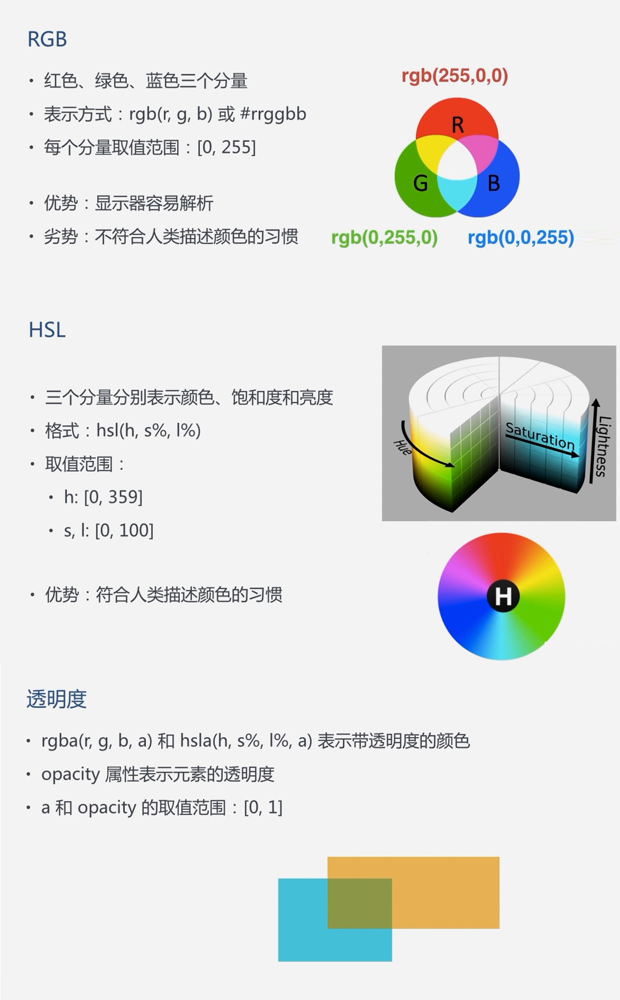

SVG填充方式：RGB 和 HSL、透明度
填充颜色，透明度
<rect fill="rgb(255, 255, 0)" opacity="0.5"/>
<rect fill="hsl(0, 50%, 20%)" opacity="0.5"/>
填充颜色及透明度
<rect fill="rgba(255, 255, 0, 0.5)" />
<rect fill="hsla(0, 50%, 20%, 0.5)" />
https://paletton.com 在线配色方案
